Compat Inspector is a JavaScript-based testing tool that analyzes your site while it runs. Compat Inspector reports patterns of interaction which can cause issues in recent modes. This allows you to identify problems quickly without memorizing a bunch of documentation or searching through the entirety of your site's code. The IE team developed Compat Inspector during the course of IE9 to speed up the process of recognizing common issues across different sites. Now you can use it too.
Compat Inspector is designed to help sites migrating to IE9 mode and up, not those running in legacy modes. You may still need to refer to documentation such as the Internet Explorer 9 Compatibility Cookbook and the Internet Explorer 10 Guide for Developers for some issues. The best pattern is to use Compat Inspector first, then fall back to documentation if nothing is found.
Getting started
Run Compat Inspector by adding the following script before all other scripts on each page you want to test:
<script src="http://edgeportal.blob.core.windows.net/demos/inspector.js"></script>Alternatively you can use Fiddler to automatically inject Compat Inspector on pages you visit by adding this snippet to your Fiddler Script. Then you can toggle Compat Inspector on and off from the "Rules" menu.
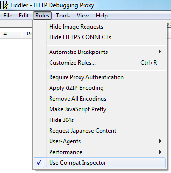
After you have the above script in place, open your page in IE9 or IE10. Compat Inspector will immediately start analyzing the page. Note that identification of some issues requires execution of the related code. So you should also explicitly test any interactions known to be working incorrectly.
Compat Inspector will keep a running total of messages associated with detected issues. A summary view in the upper right hand corner of the page displays the results:
Click on this view to expand it and obtain detailed information about each detected issue with links to relevant documentation:
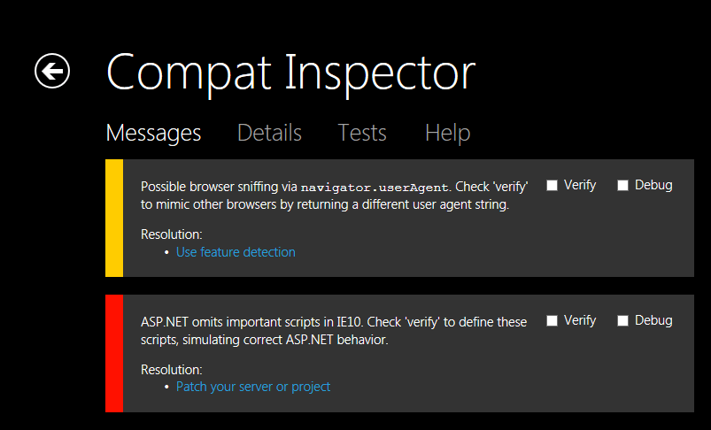
Most errors and warnings also provide two additional actions for further investigation: "Verify" and "Debug."
Verifying an Issue
Some test cases have built-in "verifiers" that emulate legacy behavior. This allows you to confirm the root cause of an issue before making any changes to your code.
Prerequisite: Compat Inspector is opened in the detailed information view and displaying an error or warning message containing a checkbox labeled "Verify."
- Click the "Verify" checkbox for the issue you want to confirm
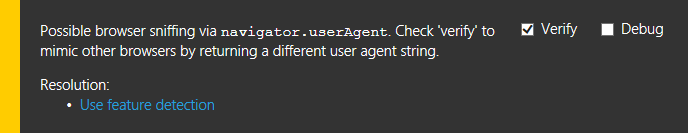 - Refresh the page (You will see a notification indicating the
verifier has been enabled)
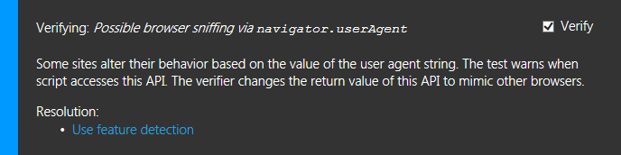 - Repeat the steps that originally triggered the error or warning
- If the issue still occurs
- If error or warning messages are still displayed, repeat steps 1-4 for each remaining message
- Otherwise, Compat Inspector cannot fully identify this issue. Refer to the Internet Explorer 9 Compatibility Cookbook and the Internet Explorer 10 Guide for Developers for additional help.
- Otherwise, you've identified the root cause of the issue
- Uncheck all "Verify" checkboxes
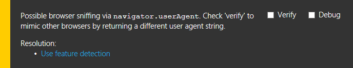 - Refresh the page
- Follow the steps for debugging an issue below to locate the source of each message in your code
- Follow the instructions in the displayed error/warn messages to resolve the issue
- Note: Also look for any "if IE" checks controlling the execution of the problematic code. IE9 and up typically work best when given the same code as other modern browsers.
- Uncheck all "Verify" checkboxes
Debugging an Issue
Compat Inspector can also help you isolate where things went wrong via the "debug" feature.
Prerequisite: Compat Inspector is opened in the detailed information view and displaying an error or warning message containing a checkbox labeled "Debug."
- Click the "Debug" checkbox for the issue you want to investigate
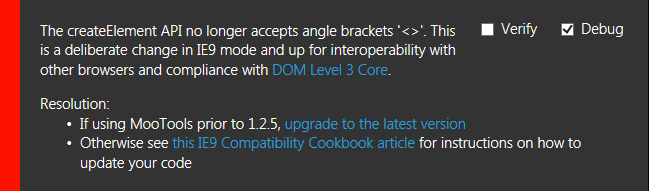 - Open the F12 developer tools by pressing the F12 key

- Switch to the "Script" tab
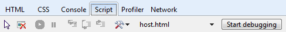 - Click "Start debugging"
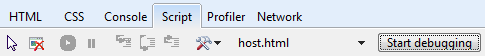 - Repeat the steps that originally triggered the error or warning (This will invoke
the script debugger)
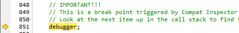 - Switch to the "Call stack" sub-tab located in the right half of the F12 developer
tools
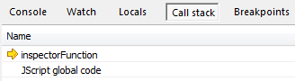 - Double-click the entry visually below the highlighted entry in the call stack
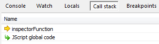 - Look over at the left hand side of the F12 developer tools to see the code that
triggered the error or warning
Identifying Frames
Many pages embed frames, some from other sources. These frames also produce messages if you're using Fiddler to inject Compat Inspector. Compat Inspector helps you isolate which frame or frames triggered a message. Just click a message to open it in the "Details" view. The view will display an entry for each frame that triggered the message. Each entry will contain the URL of the frame plus scoped "Verify" and "Debug" options. Use the options to investigate issues only in the frames you care about.
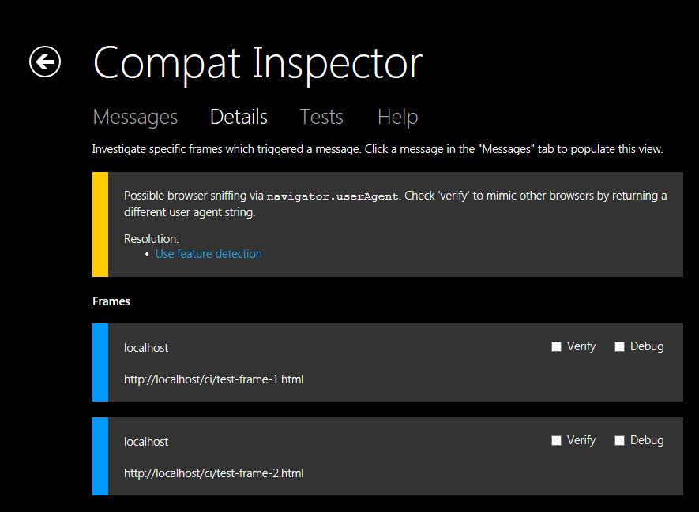
JavaScript Libraries
One common problem is using out-of-date versions of JavaScript libraries. Compat Inspector helps here in two ways. First, it detects the presence of common libraries and reports the version in use. Second, it provides a "Verify" checkbox to substitute the latest version of the detected library. Using this you can quickly identify if an old version of a library is the root cause of an issue.
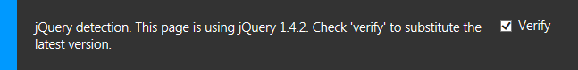
Note: Substitution may not work if the library has been concatenated with other scripts.
Last Steps
Remove the Compat Inspector script from all your pages before publishing. Compat Inspector is a test tool and should not be used in production.